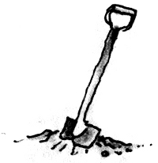

Doğru çizgide olsanız bile orada dikilip kalırsanız, oyun dışı kalırsınız.
Will Rogers
Bir reklam ajansının başkan yardımcısı “pireyi deve yapan adamdır”. Pireyi deve yapan bir adam, işe sabah saat 09’da gelip de masasının üzerinde bir pire bulan ve saat 17’ye kadar ondan bir deve yaratmaya çabalayan, sözde yoğun bir yöneticidir. Usta bir “pireyi deve yapıcı” ise, daha öğlen tatili olmadan bunu başarandır.
Fred Allen
Kaçırıldığım anda, annemle babam hemen harekete geçmişler.
Odamı kiraya vermişler.
Woody Allen
Bölüm yedide anlattığımız gibi, cesaretinizi toplayıp fikrinizi birine açmalısınız.
Dahası, itirazlar ve küçümsemelerle karşılansa bile bastırmalısınız.
Peki ama, ya alkışlarla karşılanırsa?
George Ade, geçen yüzyılın başlarında yaşamış yaratıcı bir yazardı.
Bir keresinde, annesiyle yapılmış bir söyleşiyi okumuştum.
Söyleşiyi yapan adam, kadıncağızın oğlunun hayranlarından olmadığı gibi, ona Ade’nin kaprisli tarzı, inişli çıkışlı yapısı ve sığ kişilikleştirmeleri hakkında sorular soracak kadar da yakışıksız biriydi.
Sonunda Bayan Ade dayanamayıp patlamıştı: “Ah, elbette pek çok kişinin George’dan daha iyi yazabileceğini biliyorum, ama George yazıyor.”
“George yazıyor.”
Bu, birinin bugüne kadar söylediği en hoş sözlerden biridir.
İki kelimede, çoğu insana (aralarında ben de varım) neler olduğunu özetleyiveriyordu: Bir fikir yakalıyorlar, bunu bazı insanlara açıklıyorlar, açıkladıkları insanlar hep “Oooo, müthiş!” diyorlar ve sonra da hepsi, insanlara anlattıkları fikirleri hayata geçirmeyi asla başaramadan bambaşka işlere dalıp gidiyorlar.
Sanırım sebebi de şu: “Oooo, müthiş!” demeleri yeterli bir ödül gibi geliyor. İnsanda, gerçekten de iyi bir fikrin onaylanmasından kaynaklanan o ılık duyguları yaratıyor, herkes bir sihirbaz olduğunuzu biliyor ya, bu yeter!
Fakat, fikrinizden bir şey çıkmıyorsa, kimsenin işine yaramıyorsa, bir şeyi yaratmıyor ya da gerçekleştirmiyorsa, bir işi daha iyiye götürmüyor ya da bir soruna çözüm getirmiyorsa, gerçek değeri ne olabilir ki?
Gerçek şu: fikri olup da onu bir işe yarar hale sokamamak ile hiçbir fikri olmamak arasında bir fark yoktur.
Bu yüzden de, eğer öncelikle yarar hale sokma planınız yoksa, onu ortaya atmayın. Bu sadece zaman ve enerji savurganlığıdır.
Dahası, ya (a) kimseye fikrinizi açmayın, ya da (b) “Ooo, müthiş!”i yeterli görmeyin.
Tamam mı? Anlaştık mı? Eğer bir fikriniz olursa, cesaretinizi bir kere daha toplayıp da ikinci adımı atacağınıza söz veriyor musunuz? Güzel.
Öyleyse işte size yardımcı olacak bazı noktalar:
HEMEN KOLLARI SIVAYIN
Fikrinizin coşkusu yarın daha fazla mı daha az mı olacak?
Öyleyse, ne bekliyorsunuz?
Emerson der ki: “Hiçbir şey, coşku olmaksızın gerçekleştirilemez.” Coşku ne kadar yüksek olursa, o kadar iyidir.
Zaten herhangi bir şey için beklemek de yanlıştır.
Hemen kolları sıvayıp başlayın. Bir kere durağanlığı kırıp da hareketi başlattınız mıydı, fikir de kendiliğinden hayata geçip uygun olduğu yerdeki talebi karşılamaya yönelir; fırsatlar yaratır; engelleri aşar, karşı çıkışların üstesinden gelir ve mantık kazanır.
YAPACAKSANIZ, YAPIN
Eğer kendinizi fikrinizi hayata geçirmeye adamamışsanız, bundan sonraki haftaları, belki de ayları “Ah, keşke yapmış olsaydım”larla geçireceksiniz demektir.
Fikri gerçekleştirmenin en iyi yolu, ona para yatırmaktan geçer. Tasarruflarınızdan bir miktar para çekin ya da kayınbiraderinizden borç alın, fikrinizin adına bir banka hesabı açın, bu hesabın bir kısmını projenizi gerçekleştirmek için ihtiyacınız olan şeylere harcayın.
İşte yükümlülük budur. Yükümlenmek, eylemi yaratır.
KENDİNİZE ZAMAN SINIRI KOYUN, NE KADAR KISAYSA O KADAR İYİDİR
Yapmak zorunda olduğunuzu bildiğinizde, neler yapabileceğinizi görmek gerçekten çarpıcıdır.
Edison, genellikle bir şeyi ne kadar zamanda icat edebileceğini öngörür ve o sürede gerçekleştirirdi. En yakın çalışma arkadaşlarından biri olan F. R. Upton şöyle anlatır: “Bazen, zamansız açıklamalarla Edison’un bile bile başını derde soktuğunu düşünürdüm ... Sonra da o dertten kurtulmak için var gücüyle çalışırdı.”
Reklamcılığın gelişmesi adına, ben de hep böyle yaparım. “Üç yeni fikir daha üreteceğiz” derdim öğlene doğru ortağıma, “öğlen yemeğinde tartışabiliriz.”
Emin olun ki her zaman üç yeni fikirle otururdum sofraya. Öğlen yemekleri çok önemlidir.
FİKRİNİZİ EYLEME DÖNÜŞTÜRMEK İSTİYORSANIZ, YAPMANIZ GEREKEN İŞLERİN LİSTESİNİ ÇIKARTIN
Sonra da her gün listenizdeki işlerden en azından birini gerçekleştirin.
Eğer fikrinizin uzmanlık alanınızın dışına taştığını ve bu yüzden sıkıntıya düşeceğinizi hissederseniz, soluğu kütüphanede alıp o alan üzerinde yazılanları okuyun. Ya da birisine sorun. Ya da gidip konuyla ilgili bir kursa yazılın.
Çizimlere ihtiyacınız varsa, çizdirin. Patent avukatına ihtiyacınız varsa, birini arayın. Dikenli tel fikri, yıllardan beri vardı. Fakat bu konuda bir şeyler yapan Joseph Glidden oldu.
1873’te, Winner adı altında patent aldı ve milyonlar kazandı.
Bir broşür yazmanız gerekiyorsa, hemen yazmaya koyulun.
Gitar çalmasını öğrenmeniz gerekiyorsa, bu kitabı kapatıp hiç durmadan bir gitar öğretmeni arayın.
Eğer yapmanız gereken... Eh, ne demek istediğimi anlamışsınızdır.
Ama unutmayın: Fikriniz için her gün bir şey yapın. Bilgisayarınızı, not defterinizi açın ve bir şeyler yapın. Her gün. Hatta, yaptığınız bir gün önce yaptığınızın tekrarı bile olsa, durmayın yapın.
Ay sonunda ne kadar ilerlemiş olduğunuzu görüp şaşıracaksınız.
Yıl sonunda ise aklınız başınızdan gidecek.
“GEMİLERİNİZİ YAKIN”
Sezar da başka komutanlar da bir ülkeye saldırdıklarında aynı tekniği uygularlardı. Askerlere, kaçma olanağının ortadan kalktığını göstermek için çarpıcı bir yoldur bu. Ya o ülkeyi fethedecekler ya da öleceklerdir; başka seçenekleri yoktur, bulabilecekleri bahaneler de.
Başaramazsanız nasıl bir bahane bulursunuz? Yakın gemilerinizi.
Yeterince paranız mı yok? Borçlanın. Artık başarısızlık için nakit tıkanıklığı gibi bir bahaneniz kalmadı.
Yeterince zamanınız mı yok? Tamam, o gemiyi de yakın: Her sabah bir iki saat erken kalkıp fikriniz üzerinde çalışın.
Yeterince bilmiyor musunuz? Öğrenin.
“Yakın gemilerinizi, yakın.”
EĞER FİKRİNİZİ BAŞKASINA SATAMIYORSANIZ, KENDİNİZ UYGULAYIN
Thomas Adams, sakız fikrini büyük bir şirkete satmaya çabaladı. Reddedildi. O da kendi başına yapıp satmaya başlayarak, tümüyle yepyeni bir sanayi yarattı. Dört oğlunun her birine bıraktığı miras, birer servetti.
Fikrinize gerçekten inanıyor musunuz?
O zaman neden kendiniz yapmıyor da sizin onda biriniz kadar kafa yormuş insanların aslan payını kapmalarına göz yumuyorsunuz?
Saldırın.
FİKRİNİZİN ARKASINDA DURUN
Herkesin bir fikir yakalama hikâyesi vardır. Bu ya bir yatırım fikridir ya da icat ya da yeni bir ürün, yeni bir hizmet ya da var olan bir ürünün yeni bir kullanım biçimi olabilir. Ya da para tasarrufuna, bir etkinliğe, bir promosyona ya da bir buluşa, bir senaryoya, bir kitaba ya da bir masa ya da video oyununa ya da gayrimenkul spekülasyonuna ilişkin bir fikir. Ya da evler için kullanılmış kahve artıkları ile toz portakalın birlikte değerlendirilmelerine yönelik köşe döndürücü bir fikir de olabilir... Ama hayata geçirmezseniz, bir başkası çıkıp fikrinizi de, aslan payını da kapıverir.
Benim de böyle bir hikâyem var. Hatta birkaç tane. Neden sizin de olmasın?
İşte size en ünlü hikâyelerden bazıları:
James Clark Maxwell radyo dalgalarının yayınını önceden görmüş ve matematiksel olarak da formülleştirmişti. Ama o bir matematikçiydi ve gerçek bir matematikçi gibi, bir kere formülleştirince işinin sona erdiğini düşündü.
Dünyada Hiçbir Şey Israrcılığın Yerini Tutamaz
Yetenek tutamaz; yetenekli ama başarısızlardan bol bir şey yoktur.
Zenginlik tutamaz; zengin doğup da yoksul ölen bir çok insan vardır.
Deha tutamaz; ödüllendirilmemiş dehalar, atasözleri gibidir.
Eğitim tutamaz; yeryüzü sürünen eğitimlilerle doludur.
Şans tutamaz; şansın dönekliği, kralları bile tahtlarından etmiştir.
Robert Hooke, belki de yerçekimi yasasını Newton’un kendi yerçekimi yasasını formülleştirmesinden bile önce bulmuştu, tıpkı Newton’un optik kitabından önce ışık ve renk teorilerini bulmuş olduğu gibi. Fakat, her iki buluşunun da arkasında durmadı.
Otto Titzling de sütyeni bulmuştu, ama hiçbir zaman patentini almayı aklına getirmedi. Bunu Phillipe de Brassiere yaptı.
İşte size ilk patronum Bud Boyd’un duvarına astığı poster:
Sadece Israrcılık ve Kararlılık
Her Şeye Kadirdir
“Her zaman” derdi Bud, “insanlar başarısızlığa uğramazlar, sadece denemeyi bırakırlar.”
Bırakmayın. Arkasında durun.
KENDİNİZE BİR SEBEP YARATIN
Bu kitabı yazmak fikrini üç yıldır taşıyorum. Gerçekleştirmemin bu kadar uzun zaman almasının sebebi, bu kitapta sizlere verdiğim kurallardan, son ikisi dışında, hiçbirini uygulamamış olmam; arkasında durdum ve kendime bir sebep yarattım.
Bendeniz, yavaş yazarım. Her ne kadar öyle görünmese bile, kitap için yazdığım her üç cümleden ikisini atıp durdum; sonra her cümleyi yeni baştan yazdım, bunu üç kere yaptım, dört kere de okuyup değiştirdim.
Dahası, aylar boyunca tek kelime bile yazmadan oturdum.
Arkasında durma sebeplerime gelince, doğrusu pek çok: Para, saygınlık, onur, inatçılık, merak, eğlence, yardım etme arzusu.
Fakat, böylesine arkasında durmamın en büyük sebebi bana, uzun zamandır birlikte çalıştığım biriyle -bu kitabın çizeriyle- yeniden bir arada çalışma şansı vereceğini bilmemdi.
Şimdi, ikimiz el ele verip kitabımızı bastırmak için kolları sıvayacağız. Bunun için de tıpkı onunla çalışma isteğinin beni dürtüklediği gibi itici güç olacak bir sebep bulmalıyız.
Şimdi kitabı okuduğunuza göre, bunu da başarmışız demektir.
Kendi sebebinizi yaratın.
